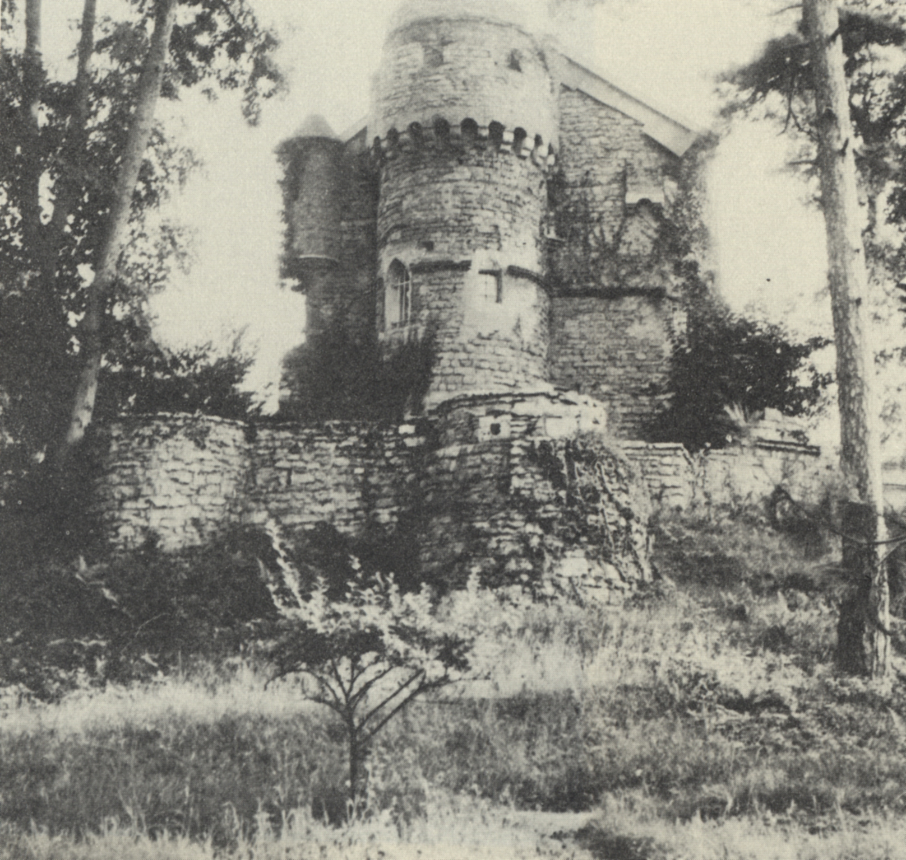
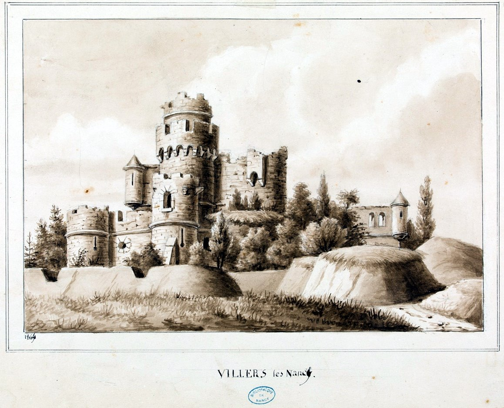
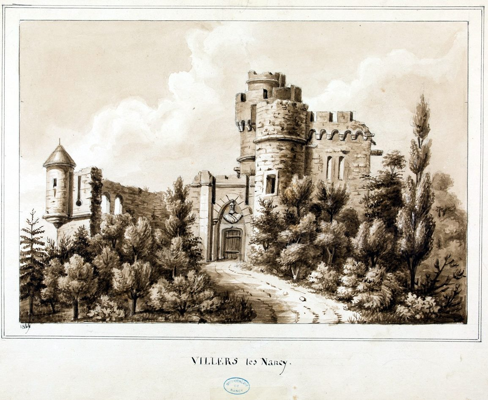
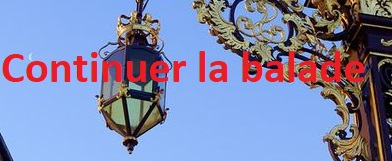

La Tour Greff

1, rue du Chanoine Piéron | Ce domaine privé n’est pas accessible au public | Latitude : 48.6706747 - Longitude : 6.142423799999960
Une tour crénelée fut construite au XIXe siècle. Elle était sensée représenter les ruines reconstituées d’un château-fort médiéval.
Ce bâtiment a été édifié par le capitaine de cavalerie et artiste Lefebvre de Montjoye, alors propriétaire du presbytère actuel. Une passerelle en fer permettait une communication directe entre ses deux propriétés. Ce bien a été vendu par ses héritiers désireux de s’installer à l’Asnée.
Une société civile immobilière s’en est rendue acquéreur à la fin des années 70 et l’a transformé en appartements. On aperçoit toujours la tour à travers les arbres.
A l’origine du nom, la famille Greff, qui a détenu un temps ce château, dirigeait une importante brasserie, rue de la Commanderie à Nancy.
Carte
Photos




Pour continuer la balade cliquez sur le bouton ci-dessous
